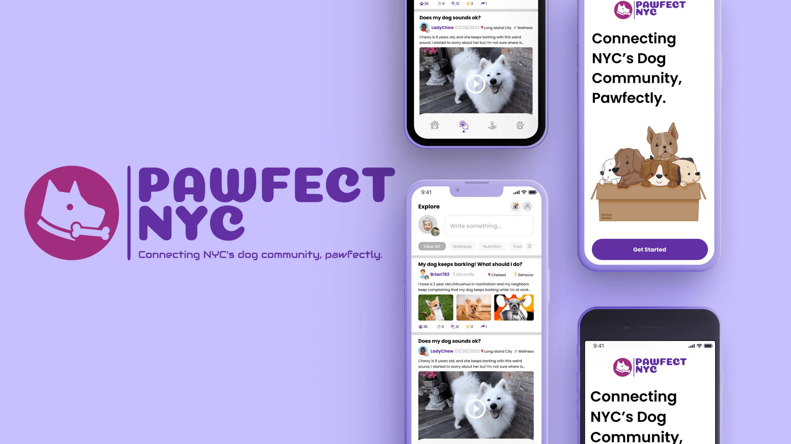
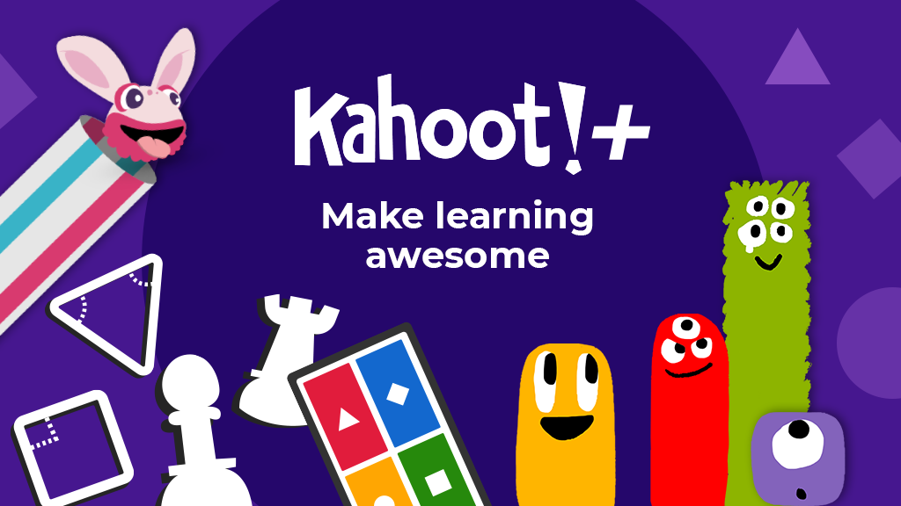
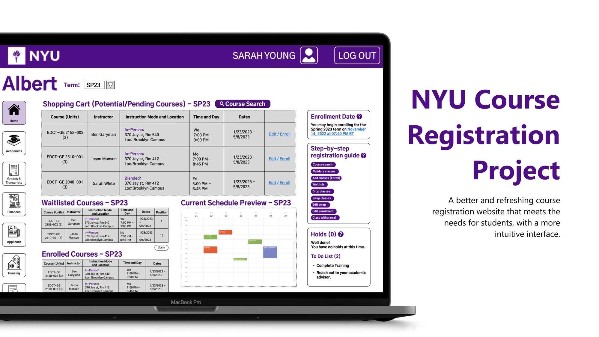

PawfectNYC: Connecting NYC's Dog Community
PawfectNYC is a social learning platform designed to support the learning needs of 20-35 NYC dog owners who are commuters. The platform aims to help dog owners balance their busy lifestyles with the needs of their beloved pets by providing a structured and supportive online community for learning and sharing information.
Learning Solution Designed for 65+ Seniors
In this project, our team has created a series of in-person courses for 65+ seniors to gain more social connections and help them learn how to use common social media such as WeChat, Alipay, and YouTube.

Learning Design Case Study: Kahoot!
In this project, I chose Kahoot as the existing learning design for analysis, such as its learners, motivation, learning context, learning experience, learning goals, learning theories, design process, and overall design critique.
Narrative Design for Learning Projects
In the Narrative course by Professor Ben Maddox, we have designed and produced a series of learning theory and science-based narrative pieces using a variety of digital media formats, namely Narrative in Audio, Games, Social Media & Learning, VR, MR & AR, and Motion Graphics.

NYU Course Registration: Albert
ALBERT, NYU's registration system, works seamlessly for its basic function but leaves a lot to be desired when helping students decide what to take or find courses across the many different schools and programs. In this project, we investigated student needs, frustrations, and wants regarding course selection to identify key insights pointing to how we might design better course selection resources and tools.

FOLS Final Report: Learning on Reddit
Established in 2005, Reddit is a 17-year-old social platform that allows users to discover and share content matching their interests. Stephanie, Shihan and I each selected an observation lens to explore learning behaviors on Reddit. I also made a Wix site to showcase our findings and analysis.